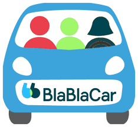

Exercice : TP - Style de direction Blablacar
Une entreprise « Fun and serious »
L’entreprise française Blablacar mise donc sur son « Fun and serious » pour continuer à conquérir le monde. Elle est déjà présente dans 19 pays avec plus de 10 millions d’utilisateurs. Le dirigeant, Frederic Mazzzella, souhaite avoir des salariés motivés, compétents individuellement et qui savent s’amuser ensemble.
Pour y arriver, tout est fait pour qu’ils partagent du temps autour d’activités proposés par Blablacar. Les salariés doivent travailler en quasi-totale autonomie. Comme l’entreprise grandit très vite, les salariés ne doivent pas solliciter en permanence les managers. C’est donc une des premières entreprise en France à proposer de telles méthodes managériales où l’esprit d’entreprise est très présent.
Cela s’illustre très bien puisqu’une nouvelle recrue de Blablacar doit être une fervente utilisatrice du covoiturage et même une « ambassadrice» de ce mode de déplacement.

Question
Indiquez quel est le style de direction adopté chez Blablacar.
Solution
Le style de direction chez Blablacar est un management participatif et autonome. L'entreprise, dirigée par Frédéric Mazzella, valorise la motivation et la compétence individuelle, tout en encourageant la cohésion à travers des activités de groupe. Les salariés travaillent en grande autonomie et ne dépendent pas constamment des managers, ce qui leur permet d'être responsables de leurs propres tâches. L'accent est mis sur un équilibre entre sérieux et plaisir ("Fun and Serious"), avec un fort esprit d'entreprise. De plus, les nouvelles recrues doivent partager les valeurs de l'entreprise, comme être utilisatrices et ambassadrices du covoiturage.
Question
Précisez en quoi ce style de direction est particulièrement adapté à cette organisation.
Solution
Ce style de direction est particulièrement adapté à Blablacar pour plusieurs raisons :
Croissance rapide de l'entreprise : Blablacar est en expansion internationale avec plus de 10 millions d'utilisateurs dans 19 pays. Le management autonome permet de gérer cette croissance sans surcharger les managers, tout en favorisant l'agilité et la réactivité des équipes.
Autonomie des salariés : L’autonomie des employés permet de déléguer la prise de décision, indispensable dans une entreprise en rapide développement. Les salariés, compétents et motivés, peuvent s'adapter à de nouveaux défis sans solliciter constamment la hiérarchie, ce qui accélère les processus.
Esprit communautaire et adhésion aux valeurs : Le modèle de Blablacar repose sur le covoiturage, une activité qui implique des interactions et la confiance entre les utilisateurs. Le style de direction, basé sur la participation et la collaboration, favorise cet esprit communautaire. Le fait que les employés soient eux-mêmes des utilisateurs et ambassadeurs du covoiturage renforce l'adhésion aux valeurs de l'entreprise.
Culture du "Fun and Serious" : Ce style managérial favorise un environnement de travail stimulant et convivial, essentiel pour motiver les équipes et créer une atmosphère positive, propice à l'innovation et à la créativité, particulièrement importante dans une entreprise technologique et tournée vers l'avenir.
En résumé, ce style de direction autonome, participatif et centré sur les valeurs est idéal pour soutenir la croissance rapide, l'innovation et l'engagement collectif de Blablacar.